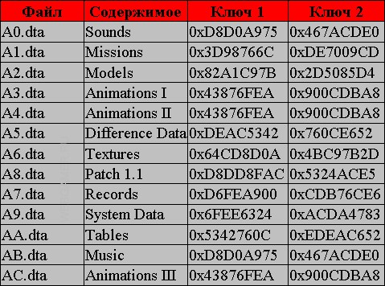

DTA
Заархивированные ресурсы Мафии.
Расположены в корневой папке игры.
Моддинг
Все, что с ними можно сделать, это: распаковать утилитами MafiaDataXtractor*,
DTAUnpacker*, плагином для Total Commander'a Game Archive UnPacker*
и запаковать файлы мода с помощью DTAs packer*.
При загрузке игра тестирует наличие dta файлов,
но потом ищет модели, текстуры, звуки и т.д. в папках models, maps, sounds...
и лишь потом читает недостающие из родных DTA.
*MafiaDataXtractor
*DtaUnpacker
*Game Archive UnPacker
*DTAs packer
Содержимое файлов
Описание содержимого папок смотри в типах файлов
Ресурсы игры версии 1.2
a0.dta - ..\SOUNDS\ - звуки;
a1.dta - ..\MISSIONS\MISE-XX\ - миссии;
a2.dta - ..\MODELS\ - модели;
a3.dta - ..\ANIMATIONS\ - 169 анимаций первая часть;
a4.dta - ..\ANIMATIONS\ - 1776 aнимаций вторая часть;
a5.dta - ..\DIFF\ - описания для видеовставок chg;
a6.dta - ..\MAPS\ - текстуры;
a7.dta - ..\RECORDS\ - файлы видеороликов;
a8.dta - патч;
a9.dta - ..\SYSTEM\ - m_pravda.wav, mrseg0.sav, taxi_pas.dat;
aa.dta - ..\TABLES\ - текст;
ab.dta - ..\SOUNDS\MUSIC\ музыка;
ac.dta - ..\ANIMATIONS\ - третья часть для видеовставок;
ISdata.dta - три текстовых файла isdata.txt, patch.txt, license.txt.
Формат файлов
Файлы распаковываются с использованием функций rw_data.dll.
Здесь важны ключи шифрования.
